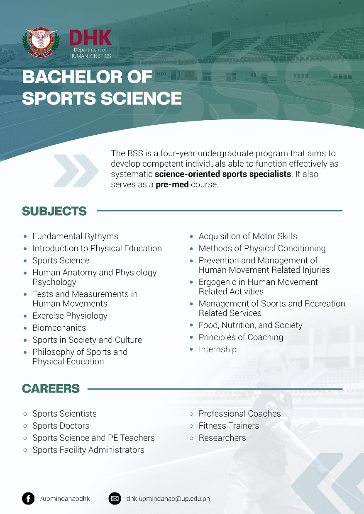
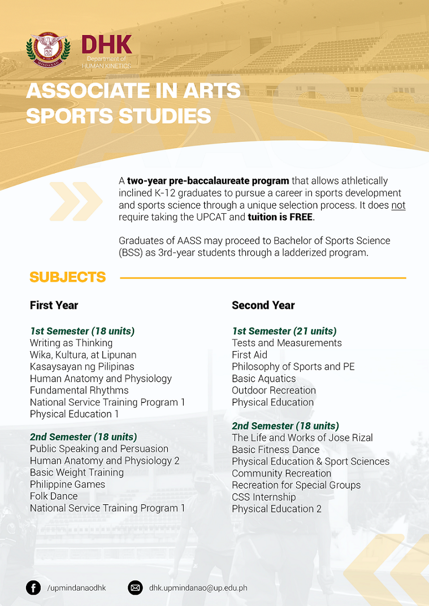

BS Anthropology
PROGRAM PROFILE
Anthropology is a social science that explores society and humanity from a bio-cultural and
cross-cultural approach. The program is designed to provide students with training, field
experience, and hands-on exposure to methods of anthropological research and visual documentation of
different cultural life ways, both local and globally.
Career opportunities for BS Anthropology graduates include research analyst, educator, development
worker, advertising consultant, human resource officer, policy researcher, evaluator, social
auditor, cultural broker, social advocate, and museum researcher, and other related fields.
JOB OPPORTUNITIES
- Educator
- Research Analyst
- Development Worker
- Advertising consultant
- Human Resource Officer
- Policy Researcher
- Evaluator
- Impact Assessor
- Cultural Broker
- Social Advocate
- Museum Researchers
COURSE PROSPECTUS
GENERAL
- General Anthropology
- Introduction to Archaeology
- Peoples and Cultures of Mindanao
- Ecological Anthropology
- Introduction to Economic Anthropology
- Political and Legal Anthropology
- Introduction to Folklore
- Language and Culture
- Culture Change & Applied Anthropology
- Introduction to Social Anthropology
- Sex and Culture
- Theory in Anthropology I and II
- Seminar in Ethnographic Writing
- Visual Anthropology
- Quantitative Methods in Social Research
- Qualitative Methods in Social Research
LINGUISTIC COURSES
- Introduction to Linguistics I and II
LEGISLATED COURSES
- PI 100, Life and Works of Jose Rizal
REVISED GENERAL EDUCATION COURSES
- AH 1, Dimensions of Identity: Understanding Ourselves Through Reading and Writing
- AH 2, Exploring Ideas Through Academic Writing
- AH 3, Effective Speech Communication
- AH 4, Adventures in Fiction, Poetry & Drama
- AH 5, Art and Society
- AH 6, Visual Communication and Society
- AH 7, Significant Themes in Literature and Films
- SSP 1, Philippine History
- SSP 2, Asia & The World
- SSP 3, Foundations of Behavioral Science
- SSP 4, Social, Economic & Political Thought
- SSP 5, Philosophical Analysis
- SSP 6, Wika at Pagka-Pilipino
- SSP 7, The Hitchhiker's Guide to Mindanao
- MST 1, Foundation of Natural Sciences I
- MST 2, Foundation of Natural Sciences II
- MST 3, Mathematics for General Education
- MST 4, Science, Technology and Society
- MST 5, Biotechnology and Society
- MST 6, Biodiversity Challenge
For more information, contact
Asst. Prof. Janus Ruel T. Cabazares
Chair, Department of Social Sciences
College of Humanities and Social Sciences
University of the Philippines Mindanao
Tel No.: (082) 293-0084 (Dean's Office, telefax)
Email: jtcabazares@up.edu.ph
BS Architecture
BS Architecture
PROGRAM PROFILE
The BS Architecture
program trains students to be professional architects with a high sense of social
and cultural awareness that is the result of five years of study in construction and
building technology, architectural history and critical theory, and urban and
regional planning. BS Architecture
graduates now work as professional design architects, heritage
planners/conservators, museum curators, architectural critics, architectural
photographers, renderers, AutoCAD specialists, cartographers, building development
scientists, corporate consultants, environmental planners, and real estate project
managers.
JOB OPPORTUNITIES
- Architectural Critic
- Architectural Photographer
- Architectural Renderer
- AutoCAD Operator
- Building Envelope Scientist
- Campus Planner
- Cartographer (Map-maker)
- Corporate Consultant
- Design Architect
- Environmental Planner
- Heritage Convervator / Architect
- Heritage Planner
- Museum Curator
- Project Manager
- Real Estate Project Manager
COURSE PROSPECTUS
- Architectural Drafting
- Monochromatic Drawing
- Architectural Design I - X
- Color Rendering
- Perspectives, Shades and Shadows
- History of Architecture I and II
- Presentation Techniques I and II
- Materials of Building Technology
- Building Utilities
- Building Construction I - III
- Mechanics of Architectural Structures I and II
- Building Laws
- Plumbing and Sanitary Services
- Research Methods in Architecture
- Elementary Surveying
- Mechanical and Electrical Systems
- Site Planning and Landscape Structure
- Structure Design I - III
- Comprehensive Services of the Architect
- Socio-Cultural and Institutional Aspects of Housing
- Finance, Taxation, Civics and Land Reform for Architects
REVISED GENERAL EDUCATION COURSES
- AH 1, Dimensions of Identity: Understanding Ourselves Through Reading and
Writing
- AH 2, Exploring Ideas Through Academic Writing
- AH 3, Effective Speech Communication
- AH 4, Adventures in Fiction, Poetry & Drama
- AH 5, Art and Society
- AH 6, Visual Communication and Society
- AH 7, Significant Themes in Literature and Films
- SSP 1, Philippine History
- SSP 2, Asia & The World
- SSP 3, Foundations of Behavioral Science
- SSP 4, Social, Economic & Political Thought
- SSP 5, Philosophical Analysis
- SSP 6, Wika at Pagka-Pilipino
- SSP 7, The Hitchiker’s Guide to Mindanao
- MST 1, Foundation of Natural Sciences I
- MST 2, Foundation of Natural Sciences II
- MST 3, Mathematics for General Education
- MST 4, Science, Technology and Society
- MST 5, Biotechnology and Society
- MST 6, Biodiversity Challenge
For more information, contact
Assoc. Prof. (Architect) Isidoro R. Malaque III, PhD
Chairperson, Department of Architecture
College of Humanities and Social Sciences
University of the Philippines Mindanao
Tel. No.: (082) 293-0084 (Dean's Office, telefax)
BA Communication and Media Arts
BA Communication and Media Arts
PROGRAM PROFILE
The BA Communication and Media Arts (BACMA) program trains students to be effective and savvy
communication and media specialists who use their skills critically, creatively, and imaginatively,
while imbuing social consciousness to become leaders in their own field who will contribute to
nation-building and uphold social justice.
BA Communication and Media Arts is a program reinvented in 2018 from the former BA Communication
Arts curriculum. The program streamlined two major tracks (Media Arts, and Speech & Corporate
Communication) into an integrated, dynamic, and expansive learning experience that will provide
students with flexible career opportunities as communication and media specialists.
JOB OPPORTUNITIES
- Academe
- Corporate and business
- Marketing and Advertising Executive / Researcher
- Corporate Communication Executive
- Information technology
- Web and App Interface Design
- Content Creation
- Social Media Management
- Media practice & public sector
- Audiovisual and Theatre Productions
- Journalism
- Advocacy Campaigning / Campaigns Director
Core subjects
- Introduction to Communication and Media
- Introduction to Communication and Media Theories
- Fundamentals of Design in Communication and Media
- Ethics in Communication and Media
- Fundamentals Writing in Communication and Media
- Fundamentals of Strategic Communication
- Communication and Media Campaigns
- Media Production
- Communication, Media, and Society
- Communication, Persuasion, and Social Influence
- Research in Communication and Media
- Production Research
- Advanced Topics in Communication and Media Research
- Special Topics
- Internship (Practicum)
- Undergraduate Thesis
Qualified Elective Subjects
These subjects allow students to specialize their skills in particular communication and media
applications.
- Organizational Communication
- Intercultural Communication
- Crisis Communication
- Integrated Marketing Communication
- Health Communication
- Photography: Theory and Practice
- Print Media Communication
- Audio Media Communication
- Audio Visual Communication
- Multimedia Communication
- Conflict-Sensitive Reporting
For more information, contact:
Instr. Samuelle Marionne C. Sanchez
Program Coordinator, BACMA
Department of Humanities
Prof. Jhoanna Lynn B. Cruz
Chair, Department of Humanities
College of Humanities and Social Sciences
University of the Philippines Mindanao
Tel. No.: (082) 293-0084 (Dean's Office, telefax)
BA English
BA English
PROGRAM PROFILE
The BA English program trains students to become critical and creative thinkers who are skilled not
just in the production of creative works but also in the practice of the English language in the
global setting. BA English graduates now work as lawyers, business process outsourcing specialists,
medical
transcribers, information officers, public relations writers, copywriters, teachers, scriptwriters,
technical writers, journalists, marketing communication specialists, and authors or editors of books
and magazines.
JOB OPPORTUNITIES
- Marketing Communication Specialist
- Medical Transcriber
- Blurbologist
- Editor / Copy Editor
- Copywriter / Content Writer
- Researcher
- English Instructor
- Freelance Writer
- PR Writer
- Information Officer
- Novelist
- Children’s Books Writer
- Technical Writer
- Scriptwriter
- Lifestyle / Feature Writer
- Customer Service Representative
COURSE PROSPECTUS
- FOREIGN LANGUAGE I, II, III, IV
- Critical Approach to Literature I and II
- Survey of English Literature I and II
- Survey of American Literature I and II
- Introduction to Shakespeare
- Introduction to Creative Writing
- Study of the English Language
- The Literature of the Philipines in English I and II
- Literary Translation
- Philippine Regional Literature in English Translation
LEGISLATED COURSES
- PI 100, Life and Works of Jose Rizal
REVISED GENERAL EDUCATION COURSES
- AH 1, Dimensions of Identity: Understanding Ourselves Through Reading and Writing
- AH 2, Exploring Ideas Through Academic Writing
- AH 3, Effective Speech Communication
- AH 4, Adventures in Fiction, Poetry & Drama
- AH 5, Art and Society
- AH 6, Visual Communication and Society
- AH 7, Significant Themes in Literature and Films
- SSP 1, Philippine History
- SSP 2, Asia & The World
- SSP 3, Foundations of Behavioral Science
- SSP 4, Social, Economic & Political Thought
- SSP 5, Philosophical Analysis
- SSP 6, Wika at Pagka-Pilipino
- SSP 7, The Hitchiker’s Guide to Mindanao
- MST 1, Foundation of Natural Sciences I
- MST 2, Foundation of Natural Sciences II
- MST 3, Mathematics for General Education
- MST 4, Science, Technology and Society
- MST 5, Biotechnology and Society
- MST 6, Biodiversity Challenge
For more information, contact
Prof. Nelfa M. Glova
Chair, Department of Humanities
College of Humanities and Social Sciences
University of the Philippines Mindanao
Tel. No.: (082) 293-0084 (Dean's Office, telefax)
Diploma in Exercise and Sports Science
Curriculum
All courses equivalent to 3 units
1st Year 1st Semester
SS 102: Human Anatomy and Physiology I
PEd 93: Philosophy of Sports and Physical Education
PEd/SS Elective: (SS 191 Principles of Coaching)
1st Year 2nd Semester
SS 130: First Aid
SS 103: Human Anatomy and Physiology 2
PEd/SS Elective: (PEd 94 Administration and Supervision of Physical Education)
PEd/SS Elective: (SS 104 Tests and Measurements in Human Movements)
2nd Year 1st Semester
SS 140: Exercise Physiology I
SS 150: Acquisition of Motor Skills
PEd/SS Elective: (PEd 190 Management of Sports and Recreation-related Services)
2nd Year 2nd Semester
PEd/SS Elective: PEd 196 CSS Internship
PEd/SS Elective: PEd 92 Philippine Games
PEd/SS elective: SS 161 Psychology in Sports
Contact:
Asst. Prof. Erwin E. Protacio
Chairperson
Department of Human Kinetics
email: eeprotacio@up.edu.ph
Diploma/Master of Arts in Urban and Regional Planning
Curriculum
All courses equivalent to 3 units except where indicated
Courses for Diploma in Urban and Regional Planning (DURP)
P201 Theory and Practice of Planning
P203 Land Use Planning
P205 Project Planning and Development
P210 Planning Process
P210.1 Planning Workshop 5 units
P214 Planning Analysis and Techniques
P231 Site Planning
P299 Research Methods
TOTAL NO. OF UNITS DURP 26 UNITS
Additional courses for degree in Master of Arts in Urban and Regional Planning (MAURP)
P229 Special Problems in Regional Planning
P300 Master's Thesis 6 units
TOTAL NO. OF UNITS MAURP 35 UNITS
For further inquiries, contact:
Associate Professor Isidoro R. Malaque III
email: irmalaqueiii@up.edu.ph
Bachelor of Sports Science

Associate in Arts in Sports Studies

BS Applied Mathematics
PROGRAM PROFILE
The BS Applied Mathematics program is designed to prepare the students to work in industry,
commerce, banks, the public sector and the academe. The students have also the opportunity to
develop their written and oral communication skills, interpersonal relationships, and teaching
abilities. The goal of this program is to produce dynamic, adaptive, highly competent graduates with
strong mathematical and computational skills, and research capabilities. Graduates in this program
are expected to be highly knowledgeable in applying the appropriate mathematical techniques in their
areas of application, particularly in data analysis, modeling and optimization.
JOB OPPORTUNITIES
■ Business Analyst
■ Consultant
■ Data Processing Consultant
■ Educator
■ Operations Research Analyst
■ Quantitative Analyst
■ Software Analyst
■ Technical Consultant
■ Mathematician
■ Mathematical Software Programmer / Analyst
■ Mathematical Statistician
MATHEMATICS SUBJECTS
Finite Mathematics
Algebra and Trigonometry
Mathematical Analysis I, II and III
Elementary Statistics
Computer Programming
Mathematical Modeling
Logic and Set Theory
Linear Algebra
Introductory Combinatorics
Numerical Analysis I and II
Introduction to Probability Theory
Statistical Methods
Introduction to Mathematical Decision Theory
Linear Programming
Mathematical Models in Operations
Research I
Ordinary Differential Equations
Non-Linear Programming
Integer and Dynamic Programming
Modern Algebra I
Advanced Calculus I
FILIPINO SUBJECTS
FIL 20, Mga Piling Katha ng mga Manunulat na Pilipino
FIL 1, Sining ng Pakikipagtalastasan
LEGISLATED COURSES
PI 100, Life and Works of Jose Rizal
REVISED GENERAL EDUCATION COURSES
AH1, Dimensions of Identity: Understanding Ourselves Through Reading and Writing
AH2, Exploring Ideas Through Academic Writing
AH 3, Effective Speech Communication
AH 4, Adventures in Fiction, Poetry & Drama
AH 5, Art and Society
AH 6, Visual Communication and Society
AH 7, Significant Themes in Literature and Films
SSP 1, Philippine History
SSP 2, Asia & the World
SSP 3, Foundations of Behavioral Science
SSP 4, Social, Eco & Political Thought
SSP 5, Philosophical Analysis
SSP 6, Wika at Pagka-Pilipino
SSP 7, The Hitchiker’s Guide to Mindanao
MST 1, Foundation of Natural Sciences I
MST 2, Foundation of Natural Sciences II
MST 3, Mathematics for General Education
MST 4, Science, Technology and Society
MST 5, Biotechnology and Society
MST 6, Biodivesity Challenge
FOR MORE INFORMATION, CONTACT
Prof. May Anne E. Mata, Ph.D.
Chairperson, Dept. of Math, Physics and Computer Science
College of Science and Mathematics
University of the Philippines Mindanao
Trunk line: (082) 293-0303
E-mail: memata@up.edu.ph
BS Biology
PROGRAM PROFILE
The Department of Biological Sciences and Environmental Studies (BSES) offers a 4-year BS Biology
degree program with two major fields of specialization to choose from, Ecology and Cell Biology. Areas
of study in Ecology include life forms in terrestrial and aquatic ecosystems. The Cell Biology division
has recently been expanded to include not only studies of life forms at cellular level, but also
molecular studies of plant, animal and microbial life forms.
The BS Biology curriculum also includes the conduct of an undergraduate thesis which provides the
students the opportunity to perform research work along their chosen field of specialization under the
guidance of their selected faculty adviser.
JOB OPPORTUNITIES
Students may proceed to pursue a medical degree after graduation. Other graduates may pursue careers
in either government and private institutions as teachers or researchers, or in government organizations
engaged in biological conservation and/or advocacy activities.
BIOLOGY SUBJECTS
BIO 10, Introduction to Biology
BIO 70, Earth’s Processes & Biological Systems
BOT 3, Intermediate Botany
MCB 1, General Microbiology
BIO 150, Principles of Ecology
ZOO 3, Intermediate Zoology
BIO 30, Genetics
BIO 101, Introductory Molecular Biology
BIO 120, Cell Biology
BIO 140, Evolutionary Biology
BIO 199, Undergraduate Seminar
BIO 199, Undergraduate Seminar
MATHEMATICS SUBJECTS
MATH 11, College Algebra
MATH 14, Plane Trigonometry
MATH 26, Analytic Geometry & Calculus I
STAT 1, Elementary Statistics
FILIPINO SUBJECTS
FIL 20, Mga Piling Katha ng mga Manunulat na Pilipino
FIL 1, Sining ng Pakikipagtalastasan
LEGISLATED COURSES
PI 100, Life and Works of Jose Rizal
REVISED GENERAL EDUCATION COURSES
AH1, Dimensions of Identity: Understanding Ourselves Through Reading and Writing
AH2, Exploring Ideas Through Academic Writing
AH 3, Effective Speech Communication
AH 4, Adventures in Fiction, Poetry & Drama
AH 5, Art and Society
AH 6, Visual Communication and Society
AH 7, Significant Themes in Literature and Films
SSP 1, Philippine History
SSP 2, Asia & the World
SSP 3, Foundations of Behavioral Science
SSP 4, Social, Eco & Political Thought
SSP 5, Philosophical Analysis
SSP 6, Wika at Pagka-Pilipino
SSP 7, The Hitchiker’s Guide to Mindanao
MST 1, Foundation of Natural Sciences I
MST 2, Foundation of Natural Sciences II
MST 3, Mathematics for General Education
MST 4, Science, Technology and Society
MST 5, Biotechnology and Society
MST 6, Biodivesity Challenge
FOR MORE INFORMATION, CONTACT
Prof. RUTH U. GAMBOA, PhD
Chairperson, Dept. of Biological Science and Environmental Studies
College of Science and Mathematics
University of the Philippines Mindanao
Tel No.: (+63)(082) 293-0302
Email: csm-dbses@upmin.edu.ph
BS Computer Science
PROGRAM PROFILE
The program was instituted in UP Mindanao in 1998 in response to the increasing demand for highly
skilled and capable IT professionals in the region. This program aims to produce graduates who are
prepared for research and instruction activities related to the discipline and advanced studies in CS
and trained to develop software systems.
JOB OPPORTUNITIES
Graduates in this program can work as
■ Educator
■ Database Manager / Administrator
■ IT Consultant
■ Network Administrator
■ Research Analyst
■ Software and System Developers
■ Computer System Analyst
■ System and Security Administrator
■ Web Developer
SUBJECTS
COMPUTER SCIENCE
Intro to Computer Science
Discrete Mathematical Structures in Comp. Science
Fundamentals of Programming
Discrete Mathematical Structures in Comp. Sci. II
Data Structures
Logic Design and Digital Computer Circuits
Design and Implementation of Programming
Languages
File Processing and Database Systems
Intro to Computer Org. and Machine Level
Programming
Numerical & Symbolic Computation
Operating Systems
Intro to Software Engineering
Computer Architecture
Data Communications and Networking
Automata and Languages Theory
Design and Analysis of Algorithms
Undergraduate Seminar
Undergraduate Thesis I & II
MATH AND PHYSICS SUBJECTS
College Algebra & Trigo.
Calculus & Analytic Geo.
Calculus & Analytical Geo. II
General Physics I
Elementary Statistics
Calculus & Analytic Geo. III
General Physics
Statistical Methods
LEGISLATED COURSES
PI 100, Life and Works of Jose Rizal
REVISED GENERAL EDUCATION COURSES
AH1, Dimensions of Identity: Understanding Ourselves Through Reading and Writing
AH2, Exploring Ideas Through Academic Writing
AH 3, Effective Speech Communication
AH 4, Adventures in Fiction, Poetry & Drama
AH 5, Art and Society
AH 6, Visual Communication and Society
AH 7, Significant Themes in Literature and Films
SSP 1, Philippine History
SSP 2, Asia & the World
SSP 3, Foundations of Behavioral Science
SSP 4, Social, Eco & Political Thought
SSP 5, Philosophical Analysis
SSP 6, Wika at Pagka-Pilipino
SSP 7, The Hitchiker’s Guide to Mindanao
MST 1, Foundation of Natural Sciences I
MST 2, Foundation of Natural Sciences II
MST 3, Mathematics for General Education
MST 4, Science, Technology and Society
MST 5, Biotechnology and Society
MST 6, Biodivesity Challenge
FOR MORE INFORMATION, CONTACT
Prof. May Anne E. Mata, Ph.D.
Chairperson, Dept. of Math, Physics and Computer Science
College of Science and Mathematics
University of the Philippines Mindanao
Tel. no.: (082) 293-0303
Email: memata@up.edu.ph
BS Food Technology
PROGRAM PROFILE
BS Food Technology is a 4-year program that seeks to train students to be the prime movers of the
food industry. The program focuses on providing students with appropriate knowledge, skills, and
technique of the foundation courses of food technology in the interest of developing new food products,
processes, and innovative food systems. Ultimately, graduates will be equipped with holistic
understanding of food science and other disciplines to: ensure food safety and security; be able to
define problems related to food systems, identify potential causes and solutions, and making innovative
decisions and recommendations; to demonstrate skills in the evaluation and advocacy of food-related
policies; and to develop socially, culturally and environmentally related food systems that promote
equity and sustainability.
JOB OPPORTUNITIES
Food Technology graduates can be hired in the following sectors:
- FOOD INDUSTRY - as quality control officer, quality analyst officer, production managers,
research and development staff, laboratory analyst, etc.
- EDUCATIONAL INSTITUTIONS - as food technology teachers, trainors, etc.
- RESEARCH INSTITUTIONS - as laboratory analyst and researchers to develop novel products.
- BUSINESS - as entrepreneurs in individual or corporate enterprises.
- FOOD RELATED ESTABLISHMENTS - as technical sales person or manager of food processing equipment,
food analyses equipment, food additives, etc.
- GOVERNMENT AGENCIES - involved in food safety monitoring, food standards, and policy/
regulations implementations
SUBJECTS
GENERAL CHEMISTRY AND BIOLOGY
College Chemistry I and II
Organic Chemistry
Biochemistry
Quantitative Inorganic Chemistry
Food Analysis
General Biology
Microbiology
MATHEMATICS AND PHYSICS
Algebra and Trigonometry
Analytic Geometry and Calculus I and II
Elementary Statistics
General Physics
Statistical Methods and Experimental Design
MANAGEMENT
Enterprise Development
FOOD SCIENCE AND TECHNOLOGY
Food Microbiology
Sensory Evaluation of Foods
Food Chemistry I and II
Food Engineering I and II
Food Processing I and II
Methods of Food Research
Product Development
Food Packaging and Shelf-life Evaluation
Food Laws and Regulation
Food Safety
Quality Assurance
Processing of Fruits and Vegetables
Principles and Practice in Food Processing Management
Principles and Practice in Food Processing Waste Management
Plant Practice
Undergraduate Thesis
LEGISLATED COURSES
PI 100, Life and Works of Jose Rizal
GENERAL EDUCATION COURSES (30 credits)
Required:
Math, Culture and Society (MATH 10)
Critical Perspectives in the Arts (ARTS 1)
Mindanao Studies (MinStud 1)
Ethics and Moral Reasoning in Everyday Life(Ethics 1)
Science, Technology and Society (STS 1)
Kasaysayan ng Pilipinas (KAS 1)
FOR MORE INFORMATION, CONTACT
Assoc. Prof. Dann Marie N. del Mundo, Ph.D.
Chairperson, Dept. of Food Science and Chemistry
College of Science and Mathematics
University of the Philippines Mindanao
Tel No.: (082) 293-0303
Email: dndelmundo1@up.edu.ph
MS Food Science
Background
As UP Mindanao is envisioned to grow into a comprehensive University, its academic programs shall
put emphasis on science, technology, agriculture, agriculture and medicine so that it can assist the
region in the process of nation building.
As new global issues emerge, the food industry is beset with concerns in waste reduction, food
safety,
food security, development of new products and the like. The University believes that the MS Food
Science program can assist in building up human resource who are equipped to find solutions to these
problems. The Master’s Program is responsive to the needs of the food industry and the academe.
Objectives
The MS Food Science is intended for food entrepreneurs, personnel of government agencies involved in
food industries, policy makers, the academe and research institutions. It aims to:
- Train manpower than can lead in value added industries, research & development and manufacturing
in Mindanao;
- Provide technical services to food processors & farmers actively involved in food production;
and
- Develop faculty of institutions in the area who are offering the undergraduate course in Food
Technology.
Admission Requirements
Applicants for admission must be holders of a bachelor’s degree in Food Science and Technology or
related disciplines with a general weighted average of 2.50 or better.
A duly accomplished Application form (GS Form -1) must be submitted with the following documents:
- Cover letter addressed to the Dean, signifying intent to apply and the degree sought
- Original or Certified Copy of Official Transcript of Records
- Two sealed letters of recommendation (GS-Form 2) from former professors, supervisors or
colleagues
- For foreign applicants: Certification of medium of instruction (in previous degree) by the
University Registrar or results of TOEFL (min score: 600) or IELTS (min score: 6.5)
- Non-refundable application fee (Php 200.00 for Filipino applicants and US$25.00 for foreign
applicants)
Note: A student with inadequate background in food science will be required to take additional
courses without credit.
Curriculum
*Core Courses (TOTAL = 19 units)
FST 202 Food Analysis (3 units)
FST 210 Food Biochemistry (3 units)
FST 221 Advanced Food Microbiology (3 units)
FST 235 Thermal Processing (3 units)
FST 299 Graduate Seminar (1 unit)
FST 300 Master’s Thesis (6 units)
**Other Major Courses (3 units)
FST 219 Postharvest Biochemistry of Fruits & Vegetables
FST 220 Microbial Aspects of Food Processing
FST 236 Dehydration and Freezing
FST 240 Tropical Food Processing
FST 241 Tropical Fruits & Vegetables Processing
FST 290 Special Problems
FST 291 Special Topics
***Minor subjects (9 units)
200-level or at most 100-level Courses from another college offering graduate programs
Graduate Faculty
Juma Novie A. Alviola
PhD in Food Science and Technology
MS Food Science
BS Biology (Cum laude)
Dominica DM. Dacera
PhD in Environmental Technology
M. Eng. Water and Wastewater Engineering
BS Chemical Engineering
Dann Marie N. Del Mundo
PhD in Food Technology
MS Environmental Science
BS Food Technology
Jennifer P. Fronteras
PhD in Biochemistry (ongoing)
MS Biochemistry
BS Agricultural Chemistry (Magna cum Laude)
Erwin Oliver V. Fundador
PhD in Chemistry
MS Biochemistry
BS Chemical Engineering
Noreen Grace V. Fundador
PhD in Polymer Science
MS Biochemistry
BS Food Technology
Jackie Lou J. Tagubase
PhD in Global Agricultural Sciences
Master in Management
BS Food Technology
Joel Hassan G. Tolentino
PhD in Chemistry
BS Chemical Engineering (Cum laude)
Kriza Faye A. Calumba
MS Nutrition and Food Sciences
BS Food Technology (Magna Cum Laude)
Rovi Gem E. Villame
MS Food Science
BS Food Technology
BS Agribusiness Economics
PROGRAM PROFILE
The program is based primarily on the needs of Mindanao, particularly in pursuing the island’s role
as the country’s food basket amidst the challenges of globalization and
international competitiveness. The program is
unique as no other university in the region offers a degree in economics that is
geared towards applying economic theories in agribusiness. The program will
develop graduates with strong theoretical and mathematical foundations necessary
for the application of concepts in real problems of the region.
JOB OPPORTUNITIES
Graduates of this program will be employed in decision-making positions in agribusiness input
suppliers, marketing firms, public and private organizations providing services
to farms, the agribusiness sector and the rural sector. They can also be engaged
in research and the teaching profession.
BSABE PROGRAM STRUCTURE (2018)
A. Revised General Education (GE) courses 30 units
UP Mindanao Required (18 units)
Kasaysayan ng Pilipinas
Critical Perspectives in the Arts
Ethics and Moral Reasoning in Everyday Life
Science, Technology and Society
Mathematics, Culture and Society
Mindanao Studies
BS ABE Required (12 units)
Critical Perspectives in Communication
Self and Society
Living Systems: Concepts and Dynamics
Probing the Physical World
B. Foundation Courses 23 units
Bio 10 Introduction to Biology
CrSc 10 Introduction to Crop Science
AnSci 10 Introduction to Animal Science
Stat 1 Elementary Statistics
AMAT 131 Statistical Methods and Experimental Design
Math 17 Algebra & Trigonometry
Math 26 Analytic Geometry & Calculus I
C. Core Courses 48 units
ECON 11 General Economics
ECON 101 Intermediate Macroeconomic Theory
ECON102 Intermediate Microeconomic Theory I
ECON104 Intermediate Microeconomic Theory II
ECON 130 Elements of Mathematical Economics
ECON 137 Introduction to Quantitative Economics
ECON 138 Selected Topics in Econometrics
MGT 101 Concepts & Dynamics of Management
MGT 111 Principles of Accounting
MGT 131 Introduction to Human Relation & Behavior in Organizations
MGT 153 Introduction to Financial Management
MGT 155 Introduction to Marketing Management
ABE 102 Introduction to Agribusiness Economics
ABE 134 Applied Linear Programming for Economists
ABE 200 Undergraduate Thesis
D. Specialized Courses 30 units
ABE 151 Agribusiness Systems
ABE 139 Qualitative Methods in Agribusiness Research
ABE 152 Agricultural Cooperative and Self-Managed Business Enterprise
ABE 154 International Agricultural Trade
ABE 156 Agricultural Production Management for Agribusiness Enterprise
ABE 157 Agricultural Price and Policy Analysis
ABE 158 Industrial Organization of Agricultural Markets
ABE 159 Macroeconomics of Agricultural Development
ABE 196 Research Writing in Agribusiness Economics
ABE 198 Practicum
ABE 199 Undergraduate Seminar in Agribusiness Economics
E. Qualified Electives 9 units
(Any three of the following courses as qualified elective)
ECON 142 Economic Valuation for Environmental and Natural Resource Economics
ECON 171 Natural Resource and Environmental Economics
ECON 192 Environmental Policy Analysis
ECON 190 Special Problem
ECON 191 Special Topic
ABE 138 Economics of Gender and Agribusiness Development
ABE 150 Agricultural Policy & Management Communication
ABE 190 Special Problem
ABE 191 Introduction to Agribusiness Development and Planning
ABE 197 Sustainable Agriculture
MGT 137 Introduction to Production & Operations Management
MGT 141 Introduction to Enterprise Development
MGT 142 Enterprise Management
MGT191 Supply Chain Management
F. Legislated course 3 units
PI 100 Rizal: His Life and Works
TOTAL NUMBER OF UNITS 143 units
FOR MORE INFORMATION, CONTACT
Asst. Prof. Roxanne T. Aguinaldo
College Secretary
School of Management
University of the Philippines Mindanao
Admin Building Mintal, Davao City,
8022, Philippines
Telefax No. (082) 295-2750
Tel. No: (082) 295-2188
Mobile No. 09189196927
Website: http://www.upmin.edu.ph
Email Address: somcs.upmindanao@up.edu.ph
Master in Management
Today’s world of work is more complex and volatile than it was years back. Managerial problems,
especially those faced by decision-makers at the highest levels of administration, have become less
structured than they were in the past. Increasingly, managers have to deal with more sophisticated
technologies, more rapidly expanding and contracting markets. In adapting to these changes,
organizations have become flatter, smaller and more flexible in structure, more integrative in
approach to decision-making, and more global in operation.
Given the dynamism of our present work environment, it becomes imperative for organizational
leaders
to develop the capability to assess a broad spectrum of interrelated issues and to interpret a
continuous stream of data that are vital to decision-making.
Decision-makers ought to be humanistic because people are the carriers of today’s most
important
resources (knowledge and information), and holistic because managerial problems and issues are
interrelated.
GENERAL OBJECTIVES
The program aims to hone the following managerial skills and competences:
* Human skills – ability to lead and motivate
* Analytical skills – ability to discern relationships, detect dysfunction, identity and evaluate
options
* Integrative skills– ability to perceive the whole picture and latticework of interdependencies
* Innovativeness – ability to develop approaches in applying new and continually evolving stock of
knowledge and information
* Proactiveness – the ability to anticipate problems and issues to set the tone for change and
develop orientation or concern for the enhancement of the human condition in the long run
ADMISSION REQUIREMENTS
1. A bachelor’s degree in any field of study
2. A minimum of 2.5 or equivalent average grade
3. At least 2 years of managerial or supervisory experience
4. A favorable recommendation from a superior and at least one other person who is well acquainted
with, but not related to, the applicant
5. Passing the Graduate Admission Test
6. Favorable assessment of interview results
7. Attendance to the Bridging Program
The complete application forms must be submitted with the following:
* Official Transcript of Records
* Application fee
* Examination fee
PROSPECTUS
First Semester (Tool Subjects)
M206 Organizational Analysis 3 units
M209 Systems Approach to Strategic Planning 3 units
M210 Methods Approach for Business and Management Research 3 units
Second Semester (Functional Subjects)
M211 Marketing Management 3 units
M212 Financial Management 3 units
M216 Human Resource Management and Industrial Relations Systems 3 units
Third Semester (Integrative Block)
M217 Operations and Production Management 3 units
MGT213 Management Accounting and Control 3 units
M224 Managerial Economics 3 units
Fourth Semester
Elective 3 units
Elective 3 units
M241 Policy and Strategic Planning 4 units
ELECTIVES
ABM230 Agribusiness Systems
ABM234 Special Topics in Agribusiness Management
DM232 Community Management
DM233 Local Governance
IR204 Labor and National Economy
IR211 Collective Bargaining and Industrial Democracy
M201 Deterministic and Probabilistic Models of Choice
M205 Management Communication and Information
M234b Special Topics in Management: Value Chain Management
M235 Managing a Sustainable EnterpriseM206 Organizational Analysis 3 units
M209 Systems Approach to Strategic Planning 3 units
M210 Methods Approach for Business and Management Research 3 units
For more information, contact:
Asst. Prof. Roxanne T. Aguinaldo
College Secretary
School of Management
University of the Philippines Mindanao
Admin Building Mintal, Davao City,
8022, Philippines
Telefax No. (082) 295-2750
Tel. No: (082) 295-2188
Mobile No. 09189196927
Website: http://www.upmin.edu.ph
Email Address: somcs.upmindanao@up.edu.ph
PhD by Research
The PhD by Research program aims to produce graduates who have contributed to the body of knowledge
in specific fields of study or to have provided innovative, theory-based, systematic, and practical
solutions to the significant concerns of specific industries.Graduates will have advanced systematic
knowledge and skills applied in a highly specialized or complex multidisciplinary field of
professional work, research, and/or further study that require management expertise, innovation, and
leadership. Graduates will demonstrate an in-depth understanding of theories and concepts necessary
to advance learning and/or professional practice as well as to practice research skills providing a
critical perspective of the real-world complex issues related to a specific field of study.
The PhD by Research program aims to hone further the research skill of the candidate,
acquired
mostly through experience under the professional guidance of specialist(s) in his/her particular
area of specialization. The program allows the candidate to earn the degree through submission, and
the successful defense of a dissertation, without the usual academic course requirements. The
program requires the candidate to devote almost his/her entire residency to research.
Admission Requirements
- An applicant for admission to graduate work for the degree of Doctor of Philosophy (PhD) by
Research must:
- Be a holder of a Master of Science (MS) degree from a recognized institution in the same
area admission to the PhD degree is applied for;
- Have a grade point average of 1.75 or better in the MS degree program;
- Have at least 3 years’ experience in research beyond the MS degree; and
- Have been sole or senior/lead author of at least one published paper in the intended area of
specialization (excluding the MS and BS theses) in reputable refereed journals.
- A duly accomplished application form must be submitted with the following documents:
- Original and photocopy of the Official Transcript of Records, in English language, with no
remarks
and with an explanation of the grading system used, from all tertiary and graduate
institutions
attended;
- Photocopy of BS and MS diplomas;
- Certification from the immediate head of the agency that the applicant has at least 3 years
of
satisfactory research experience;
- Reprints or copies of the applicant’s publications (at least one from reputable journals)
wherein
the applicant is the sole or senior author;
- Capsule research proposal not exceeding five pages which shall include the title, rationale,
objectives, methodology, and references;
- For international students, certification from the office of the University Registrar of
Previous
University attended that the medium of instruction is English (if applicable), or results of
Test of
English as a Foreign Language (TOEFL) or results of the international English Language
Testing
System (IELTS), or its equivalent;
- Application fee (may be paid by bank transfer or in cash); and
- Sealed letters of references from two former professors, superiors or colleagues, and a
letter of
reference from the applicant’s former Master’s Degree Adviser.
For more information contact:
Asst. Prof. Roxanne T. Aguinaldo
College Secretary
School of Management
University of the Philippines Mindanao
Admin Building Mintal, Davao City,
8022, Philippines
Telefax No. (082) 295-2750
Tel. No: (082) 295-2188
Mobile No. 09189196927
Website: http://www.upmin.edu.ph
Email Address: somcs.upmindanao@up.edu.ph